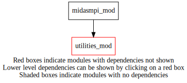
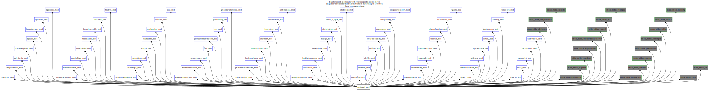

Dependency Diagrams:
 Direct Dependency Diagram¶
 Reverse Dependency Diagram¶
- Purpose
Subroutine and public variables related to general aspects of mpi. Also, subroutine and public variables related to the mpi decomposition specific to the MIDAS code.
Quick access
- Variables
mmpi_comm_ew,mmpi_comm_grid,mmpi_comm_ns,mmpi_datyp_int,mmpi_datyp_real4,mmpi_datyp_real8,mmpi_dobarrier,mmpi_myid,mmpi_myidx,mmpi_myidy,mmpi_npex,mmpi_npey,mmpi_nprocs,mmpi_numthread- Routines
mmpi_allgather_string(),mmpi_allreduce_sumr8_1d(),mmpi_allreduce_sumr8_2d(),mmpi_allreduce_sumreal8scalar(),mmpi_getptopo(),mmpi_initialize(),mmpi_myidxfromlon(),mmpi_myidyfromlat(),mmpi_reduce_sumr8_1d(),mmpi_reduce_sumr8_2d(),mmpi_reduce_sumr8_3d(),mmpi_setup_latbands(),mmpi_setup_levels(),mmpi_setup_lonbands(),mmpi_setup_m(),mmpi_setup_n(),mmpi_setup_varslevels()Needed modules
utilities_mod: MODULE utilities_mod (prefix=’utl’ category=’8. Low-level utilities and constants’)Variables
- midasmpi_mod/mmpi_comm_ew [integer,public]¶
- midasmpi_mod/mmpi_comm_grid [integer,public]¶
- midasmpi_mod/mmpi_comm_ns [integer,public]¶
- midasmpi_mod/mmpi_datyp_int [integer,public]¶
- midasmpi_mod/mmpi_datyp_real4 [integer,public]¶
- midasmpi_mod/mmpi_datyp_real8 [integer,public]¶
- midasmpi_mod/mmpi_dobarrier [logical,public]¶
- midasmpi_mod/mmpi_myid [integer,public]¶
- midasmpi_mod/mmpi_myidx [integer,public]¶
- midasmpi_mod/mmpi_myidy [integer,public]¶
- midasmpi_mod/mmpi_npex [integer,public]¶
- midasmpi_mod/mmpi_npey [integer,public]¶
- midasmpi_mod/mmpi_nprocs [integer,public]¶
- midasmpi_mod/mmpi_numthread [integer,public]¶
Subroutines and functions
- subroutine midasmpi_mod/mmpi_initialize()¶
- Called from
midas_sstbias,midas_ssttrial,midas_adjointtest,midas_analysiserroroi,midas_calcstats,midas_diagbmatrix,midas_diaghbht,midas_enspostprocess,midas_ensembleh,midas_extractbmatrixfor1dvar,midas_gencoeff,midas_letkf,midas_ominusf,midas_obsimpact,midas_obsselection,midas_prepcma,midas_pseudosstobs,midas_randompert,midas_thinning,midas_var,midas_var1d
- subroutine midasmpi_mod/mmpi_getptopo(npex, npey)¶
- Arguments
npex [integer ,out]
npey [integer ,out]
- Call to
- subroutine midasmpi_mod/mmpi_allreduce_sumreal8scalar(sendrecvvalue, comm)¶
- Arguments
sendrecvvalue [real ,inout] :: value to be summed over all mpi tasks
comm [character ,in] :: rpn_comm communicator
- Called from
cfn_sumjo(),epp_printrmsstats(),sumfso(),simvar(),prscal(),multenergynorm(),gbi_mean_gsv(),gsv_dotproduct(),grtest2(),n1qn3a(),sstb_getgriddedobs()- Call to
- subroutine midasmpi_mod/mmpi_allreduce_sumr8_1d(sendrecvvector, comm)¶
- Purpose
Perform sum of 1d array over all MPI tasks.
- Arguments
sendrecvvector (*) [real ,inout] :: 1-D vector to be summed over all mpi tasks
comm [character ,in] :: rpn_comm communicator
- Called from
- Call to
- subroutine midasmpi_mod/mmpi_allreduce_sumr8_2d(sendrecvvector, comm)¶
- Purpose
Perform sum of 2d array over all MPI tasks.
- Arguments
sendrecvvector (*,*) [real ,inout] :: 2-D vector to be summed over all mpi tasks
comm [character ,in] :: rpn_comm communicator
- Called from
- Call to
- subroutine midasmpi_mod/mmpi_reduce_sumr8_1d(sendvector, recvvector, root, comm)¶
- Purpose
Perform sum of 1d array over all MPI tasks.
- Arguments
sendvector (*) [real ,in] :: 1-D vector to be summed over all mpi tasks
recvvector (*) [real ,out] :: 1-D vector to be summed over all mpi tasks
root [integer ,in] :: mpi task id where data is put
comm [character ,in] :: rpn_comm communicator
- Called from
- Call to
- subroutine midasmpi_mod/mmpi_reduce_sumr8_2d(sendvector, recvvector, root, comm)¶
- Purpose
Perform sum of 2d array over all MPI tasks.
- Arguments
sendvector (*,*) [real ,in] :: 2-D vector to be summed over all mpi tasks
recvvector (*,*) [real ,out] :: 2-D vector to be summed over all mpi tasks
root [integer ,in] :: mpi task id where data will be put
comm [character ,in] :: rpn_comm communicator
- Called from
bcs_computeresidualsstatistics(),bcs_removeoutliers(),bcs_do_regression(),bcs_outputcvomppred()- Call to
- subroutine midasmpi_mod/mmpi_reduce_sumr8_3d(sendvector, recvvector, root, comm)¶
- Purpose
Perform sum of 3d array over all MPI tasks.
- Arguments
sendvector (*,*,*) [real ,in] :: 3-D vector to be summed over all mpi tasks
recvvector (*,*,*) [real ,out] :: 3-D vector to be summed over all mpi tasks
root [integer ,in] :: mpi task id where data is put
comm [character ,in] :: rpn_comm communicator
- Called from
- Call to
- subroutine midasmpi_mod/mmpi_allgather_string(str_list, str_list_all, nlist, nchar, nproc, comm, ierr)¶
- Purpose
Performs the MPI ‘allgather’ routine for an array of strings
- Arguments
str_list (nlist) [character ,in]
str_list_all (nlist,nproc) [character ,out]
nlist [integer ,in,]
nchar [integer ,in]
nproc [integer ,in]
comm [character ,in]
ierr [integer ,out]
- Called from
- subroutine midasmpi_mod/mmpi_setup_latbands(nj, latperpe, latperpemax, mylatbeg, mylatend[, mylathalfbeg_opt[, mylathalfend_opt[, divisible_opt]]])¶
- Purpose
compute parameters that define the mpi distribution of latitudes over tasks in Y direction (npey)
- Arguments
nj [integer ]
latperpe [integer ]
latperpemax [integer ]
mylatbeg [integer ]
mylatend [integer ]
- Options
mylathalfbeg_opt [integer ]
mylathalfend_opt [integer ]
divisible_opt [logical ]
- Called from
adv_setup(),agd_setupfromhco(),ocebg_bgchecksst(),bmat1d_setupbens(),bchm_setupch(),bdiff_setup(),ben_setuponeinstance(),bhi_setup(),csg_setup(),diff_setup(),gst_setup(),gsv_allocate(),lbhi_setup(),lst_setup(),lsp_setup(),oobs_pseudosst(),sstb_computebias(),midas_diagbmatrix,midas_randompert
- function midasmpi_mod/mmpi_myidyfromlat(latindex, nj)¶
- Purpose
use same logic as setup_latbands to compute myidy corresponding to a latitude grid index
- Arguments
latindex [integer ]
nj [integer ]
- Return
ip_y [integer ]
- Called from
- subroutine midasmpi_mod/mmpi_setup_lonbands(ni, lonperpe, lonperpemax, mylonbeg, mylonend[, divisible_opt])¶
- Purpose
compute parameters that define the mpi distribution of longitudes over tasks in X direction (npex)
- Arguments
ni [integer ]
lonperpe [integer ]
lonperpemax [integer ]
mylonbeg [integer ]
mylonend [integer ]
- Options
divisible_opt [logical ]
- Called from
adv_setup(),agd_setupfromhco(),ocebg_bgchecksst(),bmat1d_setupbens(),bchm_setupch(),bdiff_setup(),ben_setuponeinstance(),bhi_setup(),csg_setup(),diff_setup(),gst_setup(),gsv_allocate(),lbhi_setup(),lst_setup(),lsp_setup(),oobs_pseudosst(),sstb_computebias(),midas_diagbmatrix,midas_randompert
- function midasmpi_mod/mmpi_myidxfromlon(lonindex, ni)¶
- Purpose
use same logic as setup_lonbands to compute myidx corresponding to a longitude grid index
- Arguments
lonindex [integer ]
ni [integer ]
- Return
ip_x [integer ]
- Called from
- subroutine midasmpi_mod/mmpi_setup_m(ntrunc, mymbeg, mymend, mymskip, mymcount)¶
- Purpose
compute parameters that define the mpi distribution of wavenumber m over tasks in Y direction (npey)
- Arguments
ntrunc [integer ]
mymbeg [integer ]
mymend [integer ]
mymskip [integer ]
mymcount [integer ]
- Called from
bchm_setupch(),ensemblescaledecomposition(),bhi_setup(),csg_setup(),gst_setup(),uvtopsichi_gsv(),lst_setup(),lsp_setup()
- subroutine midasmpi_mod/mmpi_setup_n(ntrunc, mynbeg, mynend, mynskip, myncount)¶
- Purpose
compute parameters that define the mpi distribution of wavenumber n over tasks in X direction (npex)
- Arguments
ntrunc [integer ]
mynbeg [integer ]
mynend [integer ]
mynskip [integer ]
myncount [integer ]
- Called from
bchm_setupch(),ensemblescaledecomposition(),bhi_setup(),csg_setup(),gst_setup(),uvtopsichi_gsv(),lst_setup(),lsp_setup()
- subroutine midasmpi_mod/mmpi_setup_levels(numlevels, mylevbeg, mylevend, mylevcount)¶
- Purpose
compute parameters that define the mpi distribution of levels over tasks in X direction (npex)
- Arguments
numlevels [integer ]
mylevbeg [integer ]
mylevend [integer ]
mylevcount [integer ]
- Called from
ben_setuponeinstance(),csg_setup(),gst_setup(),lst_setup(),lsp_setup()
- subroutine midasmpi_mod/mmpi_setup_varslevels(numk, mykbeg, mykend, mykcount)¶
- Purpose
compute parameters that define the mpi distribution of variables/levels (i.e. 1->nk) over all tasks (nprocs)
- Arguments
numk [integer ]
mykbeg [integer ]
mykend [integer ]
mykcount [integer ]
- Called from
{kind=link}
{kind=link}